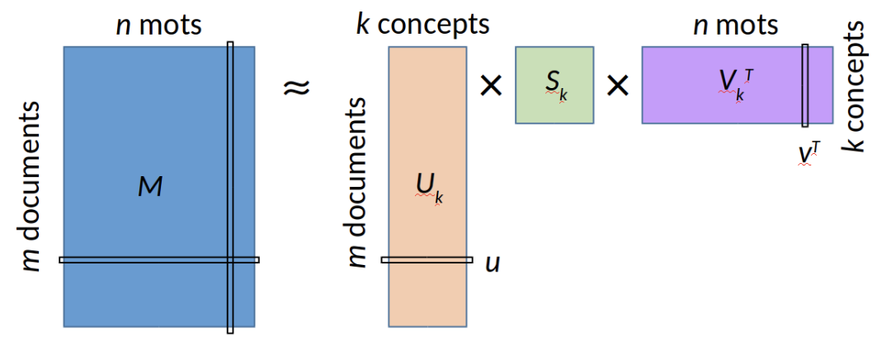
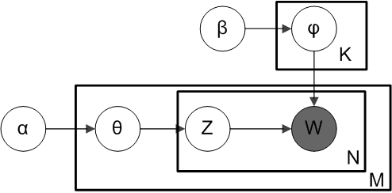

2 Words and Vectors
Vector or distributional models of meaning are generally based on a co-occurrence matrix
2.0.1 Two common co-occurrence matrix
- the word-document matrix
- the word-word matrix.
2.1 Word-document matrix
In a Word-document matrix, each row represents a word in the vocabulary and each column represents a document from some collection of documents.
Corpus of 5 short sentences about NLP (used as a running example throughout this chapter):
| S1 | S2 | S3 | S4 | S5 | |
|---|---|---|---|---|---|
| word | 1 | 0 | 0 | 1 | 0 |
| embeddings | 1 | 0 | 0 | 0 | 0 |
| vectors | 0 | 0 | 0 | 1 | 0 |
| neural | 0 | 1 | 0 | 0 | 1 |
| language | 0 | 0 | 1 | 0 | 1 |
| models | 0 | 0 | 1 | 0 | 1 |
| context | 0 | 0 | 0 | 1 | 0 |
| meaning | 1 | 0 | 0 | 0 | 0 |
“embeddings” (S1) and “vectors” (S4) never appear in the same document, yet both co-occur with “word”. LSA will detect this indirect synonymy.
2.2 Word-Word matrix
In the Word-context matrix the columns are labeled by words rather than documents.
- each cell records the number of times the row (target) word and the column (context) word co-occur in some context in some training corpus.
2.2.1 Context
- a context could be the document, in which case the cell represents the number of times the two words appear in the same document.
- smaller contexts are common: generally a window around the word
Word-word matrix for the same corpus (window \(L=1\), symmetric counts):
| word | embeddings | vectors | represent | meaning | capture | context | |
|---|---|---|---|---|---|---|---|
| word | — | 1 | 1 | 0 | 0 | 0 | 0 |
| embeddings | 1 | — | 0 | 1 | 0 | 0 | 0 |
| vectors | 1 | 0 | — | 0 | 0 | 1 | 0 |
| represent | 0 | 1 | 0 | — | 1 | 0 | 0 |
| meaning | 0 | 0 | 0 | 1 | — | 0 | 0 |
| capture | 0 | 0 | 1 | 0 | 0 | — | 1 |
| context | 0 | 0 | 0 | 0 | 0 | 1 | — |
“embeddings” and “vectors” share the same context word (“word”) → identical column profiles → cosine similarity = 1, even though they never appear in the same sentence.
2.3 Cosine for measuring similarity
The cosine similarity metric (or empirical correlation) between two word vectors \(\boldsymbol v\) and \(\boldsymbol w\) (lines of a word-document or word-word matrix)
\[ \cos(\boldsymbol v,\boldsymbol w) = \frac{\boldsymbol v^T \boldsymbol w}{\|\boldsymbol v\| \|\boldsymbol w\|} \]
2.4 TF-IDF: Weigthing terms in the vector
2.4.1 Term frequency (tf)
- Raw frequency \(tf_{t,d} = count(t,d)\) is very skewed and not very discriminative.
- Usually squashed by using the \(log10\): a word appearing 100 times in a document doesn’t make that word 100 times more relevant \[ \text{tf}_{t,d} = \log_{10}\left(count(t,d)+1\right) \]
2.4.2 Inverse document frequency
The second factor in tf-idf is used to give a higher weight to words that occur only in a few documents. \[ idf_t = \log_{10}\left(\frac{N}{\text{df}_t}\right) \] where \(N\) is the total number of documents, and \(df_t\) is the number of documents in which term \(t\) occurs.
2.5 TF-IDF: Weigthing terms in the vector
The tf-idf weighted value \(w_{t,d}\) for word \(t\) in document \(d\) thus combines term frequency \(tf_{t,d}\) with \(idf\): \[ w_{t,d} = tf_{t,d} \times idf_t \]
Applied to our running corpus (\(N=5\) documents):
| S1 | S2 | S3 | S4 | S5 | idf | |
|---|---|---|---|---|---|---|
| word | 0.12 | 0 | 0 | 0.12 | 0 | 0.40 |
| embeddings | 0.21 | 0 | 0 | 0 | 0 | 0.70 |
| vectors | 0 | 0 | 0 | 0.21 | 0 | 0.70 |
| neural | 0 | 0.12 | 0 | 0 | 0.12 | 0.40 |
| language | 0 | 0 | 0.12 | 0 | 0.12 | 0.40 |
| models | 0 | 0 | 0.12 | 0 | 0.12 | 0.40 |
| context | 0 | 0 | 0 | 0.21 | 0 | 0.70 |
| meaning | 0.21 | 0 | 0 | 0 | 0 | 0.70 |
Words appearing in only one document (“embeddings”, “vectors”, “context”, “meaning”) receive the highest weight 0.21; words shared across two documents (“word”, “neural”, “language”, “models”) receive 0.12.
2.6 Pointwise Mutual Information (PMI)
An alternative weighting function to tf-idf, PPMI (positive pointwise mutual information), is used for term(target)-term(context)-matrices.
- Target word, word we focus on.
- Context words surrounding the target word
The pointwise mutual information between a target word \(w\) and a context word \(c\) (Church and Hanks 1989, Church and Hanks 1990) is defined as: \[ PMI(w, c) = \log_2 \frac{P(w, c)}{ P(w)P(c)} \]
2.7 Positive PMI (called PPMI)
Negative PMI values (which imply things are co-occurring less often than we would expect by chance) tend to be unreliable unless our corpora are enormous.
2.7.1 Positive PMI
replaces all negative PMI values with zero (Church and Hanks 1989, Dagan et al. 1993, Niwa and Nitta 1994)
\[ PPMI(w, c) = \max(\log_2 \frac{P(w, c)}{P(w)P(c)} , 0) \]
Applied to our word-word matrix (16 context pairs total, window \(L=1\)):
\[\text{PMI}(\text{embeddings}, \text{word}) = \log_2 \frac{P(\text{emb},\text{word})}{P(\text{emb}) \cdot P(\text{word})} = \log_2 \frac{1/16}{(2/16)(2/16)} = \log_2 4 = 2.0\]
| word | embeddings | vectors | represent | meaning | |
|---|---|---|---|---|---|
| word | — | 2.0 | 2.0 | 0 | 0 |
| embeddings | 2.0 | — | 0 | 2.0 | 0 |
| vectors | 2.0 | 0 | — | 0 | 0 |
| represent | 0 | 2.0 | 0 | — | 2.0 |
| meaning | 0 | 0 | 0 | 2.0 | — |
“embeddings” and “vectors” have identical PPMI profiles: both associate with “word” only (PMI = 2.0) and with nothing else. PPMI already encodes their synonymy before any SVD.
2.8 Applications of the tf-idf or PPMI vector models
2.8.1 Principle
- Computing two documents (or word) similarity after transformation.
- Given two documents \(d_1\) and \(d_2\), the similarity is \(\cos(d_1,d_2)\).
2.8.2 Applications
Documents : information retrieval, plagiarism detection, news recommender systems, and even for digital humanities tasks like comparing different versions of a text to see which are similar to each other.
Words : finding word paraphrases, tracking changes in word meaning, or automatically discovering meanings of words in different corpora.
2.9 Latent Semantic Analysis (LSA)
2.9.1 Goal and assumptions
- extracting and representing the underlying meaning of words in a corpus of texts.
- words that occur in similar contexts have similar meanings.
2.9.2 Principle
LSA uses singular value decomposition (SVD) to identify latent, or hidden, patterns in word co-occurrence data.
2.10 Latent Semantic Analysis
LSA uses SVD on the matrix of word-document matrix to identify the latent concepts (contexts, topics, …) that underlie the relationships between words in the corpus: \(W = U S V^T\) with classical low rank approximation \(U_k S_k V_k^T\)

2.11 Latent Semantic Analysis
- The values on the main diagonal of \(S_k\) indicate the ‘importance’ of each of the k main ‘latent concepts’ (or factors).
- For each of the document, the corresponding row of \(U_k\) allows us to see which concepts are present and with what weights.
- For each of the concept, the associated column of \(V_k\) indicates which terms form the concept (and with what weights).
Calculating the similarity between a term and a document involves choosing:
- the row \(\mathbf{u}\) corresponding to the document in the matrix \(\mathbf{U}_k\),
- the row \(\mathbf{v}\) corresponding to the term in the matrix \(\mathbf{V}_k\),
- and then computing the product \(\mathbf{u}\mathbf{S}_k\mathbf{v}^T\).
To determine the similarity of a term to each of the documents \[ \mathbf{U}_k \mathbf{S}_k \mathbf{v}^T \] Conversely, we can determine the similarities between a document \(\mathbf{u}\) and all the terms through \[ \mathbf{u} \mathbf{S}_k \mathbf{V}_k^T \]
2.12 Latent Dirichlet Allocation (LDA)
2.12.1 History
In the context of population genetics, LDA was proposed by J. K. Pritchard, M. Stephens and P. Donnelly in 2000.
LDA was applied in machine learning by David Blei, Andrew Ng and Michael I. Jordan in 2003.
2.12.2 Principle
Latent Dirichlet Allocation (LDA) is a probabilistic generative model that assumes that
- each document is generated by a mixture of latent topics
- each topic is generated by a mixture of words from the vocabulary.
Documents are represented as random mixtures over latent topics, where each topic is characterized by a distribution over all the words.
2.13 LDA Generative process
For a corpus \(D\) consisting of \(M\) documents
Choose topic parameter vector for document \(i\): \(\theta_i \sim \operatorname{Dir}(\alpha)\), where \(i \in \{ 1,\dots,M \}\) and \(\mathrm{Dir}(\alpha)\) is a Dirichlet distribution with a symmetric parameter \(\alpha\) which typically is sparse (\(\alpha\)).
Choose the word parameters vector of topic \(k\): \(\varphi_k \sim \operatorname{Dir}(\beta)\), where \(k \in \{ 1,\dots,K \}\) and \(\beta\) typically is sparse
For each of the word positions \(i,j\), where \(i \in \{ 1,\dots,M \}\), and \(j \in \{ 1,\dots,N_i\}\)
- Choose a topic \(z_{i,j} \sim\operatorname{Cat}(\theta_i).\)
- Choose a word \(w_{i,j} \sim\operatorname{Cat}( \varphi_{z_{i,j}}).\)
2.14 Latent Dirichlet Allocation (LDA) in summary
\[\begin{align} \boldsymbol\varphi_{k=1 \dots K} &\sim \operatorname{Dirichlet}_V(\boldsymbol\beta) \\ \boldsymbol\theta_{d=1 \dots M} &\sim \operatorname{Dirichlet}_K(\boldsymbol\alpha) \\ z_{d=1 \dots M,w=1 \dots N_d} &\sim \operatorname{Categorical}_K(\boldsymbol\theta_d) \\ w_{d=1 \dots M,w=1 \dots N_d} &\sim \operatorname{Categorical}_V(\boldsymbol\varphi_{z_{dw}}) \end{align}\]
\[ P(\boldsymbol{W}, \boldsymbol{Z}, \boldsymbol{\theta}, \boldsymbol{\varphi};\alpha,\beta) = \prod_{i=1}^K P(\varphi_i;\beta) \prod_{j=1}^M P(\theta_j;\alpha) \prod_{t=1}^N P(Z_{j,t}\mid\theta_j)P(W_{j,t}\mid\varphi_{Z_{j,t}}) , \]
2.15 Latent Dirichlet Allocation (LDA) estimation

Estimating the parameters could be achieved through Variationnal Bayes EM algorithm.
2.16 Example of LDA in Action
Corpus of Three Documents
- “cats dogs pets love”
- “dogs bark loud outside”
- “politics government election law”
Step 1: Identify Topics
After running LDA, it may discover two topics (dist. over words):
- Topic 1 (Pets): {cats, dogs, pets, bark, love}
- Topic 2 (Politics): {politics, government, election, law}
Step 2: Assign Topics to Documents
- Document 1 -> \(90\%\) Topic 1, \(10\%\) Topic 2
- Document 2 -> \(80\%\) Topic 1, \(20\%\) Topic 2
- Document 3 -> \(95\%\) Topic 2, \(5\%\) Topic 1
2.17 Pro and Cons
2.17.1 Advantages of LDA
- Unsupervised Learning: No labeled data needed.
- Interpretable Topics: Extracts meaningful topics from text.
2.17.2 Limitations of LDA
- Fixed Number of Topics: Must specify the number of topics beforehand.
- Bag-of-Words Assumption: Ignores word order and context.
- Computationally Expensive: Requires approximation methods for inference.
2.17.3 Applications of LDA
- Topic Modeling: Organizing large text corpora (news articles, research papers).
- Recommendation Systems: Suggesting articles based on topic similarity.
- Text Classification: Assigning labels based on topic distributions.
- Social Media Analysis: Identifying trending topics in posts.
2.18 Word2vec
2.18.1 Embeddings
- more powerful word representation
- short dense vectors: \(d\) ranging from 50-1000, rather than the much larger vocabulary size \(|V|\) or number of documents \(D\)
- dense vectors work better in every NLP task than sparse vectors
2.18.2 Skip-gram with negative sampling
- The skip-gram algorithm is one of two algorithms in a software package called word2vec
- The other algorithm is CBOW (continuous bag of words)
2.19 Embedding derived from classification
2.19.1 Data : words and their context (neighboring words (\(\pm L\))
… lemon, a [tablespoon of apricot jam, a] pinch … c1 c2 w c3 c4
2.19.2 Classification task
Given a tuple \((\boldsymbol w,\boldsymbol c) \in \mathbb R^d\times R^d\) of a target word \(\boldsymbol w\) paired with a candidate context word \(\boldsymbol c\) (for example (apricot, jam), or perhaps (apricot, aardvark)) return the probability that \(c\) is a real context word (true for jam, false for aardvark): \[ P(y_{wc}=1 |\boldsymbol w, \boldsymbol c) = 1-P( y_{wc}=0 |\boldsymbol w, \boldsymbol c) \]
2.19.3 Similarity
we rely on the intuition that two vectors are similar if they have a high dot product (after all, cosine is just a normalized dot product). In other words: \[ Similarity(\boldsymbol w,\boldsymbol c) = \boldsymbol c^T \boldsymbol w \]
2.20 From dot product to logistic regression
2.20.1 Logit
\[ P(y_{wc}=1 |\boldsymbol w, \boldsymbol c) = \frac{1}{1+\exp(-\boldsymbol c^T \boldsymbol w)} \]
2.20.2 Criterion
The criterion is a kind of likelihood including positive examples (observed association) and negative examples (non observed associations). In fact skip-gram with negative sampling (SGNS) uses more negative examples than positive examples (with the ratio between them set by a parameter \(k\)).
\[ L = \sum_{ \boldsymbol w, \boldsymbol c : y_{wc} = 1} \log P(y_{wc} = 1| \boldsymbol w, \boldsymbol c) + \sum_{ \boldsymbol w', \boldsymbol c' : y_{w'c'} = 0} \log P(y_{w'c'} = 0 | \boldsymbol w', \boldsymbol c') \]
2.21 Skip-gram training pairs
Sentence: “word embeddings represent meaning” — target = embeddings, window \(L=2\)
Positive pairs (real context, \(y=1\)):
| target | context | label |
|---|---|---|
| embeddings | word | 1 |
| embeddings | represent | 1 |
| embeddings | meaning | 1 |
Negative samples (\(k=2\) per positive, sampled \(\propto P(w)^{3/4}\)):
| target | noise word | label |
|---|---|---|
| embeddings | neural | 0 |
| embeddings | deep | 0 |
| embeddings | process | 0 |
The model is trained to push \(\boldsymbol{c}_{\text{word}}^T \boldsymbol{w}_{\text{emb}} \to +\infty\) and \(\boldsymbol{c}_{\text{neural}}^T \boldsymbol{w}_{\text{emb}} \to -\infty\).
After training on all sentences: \(\boldsymbol{w}_{\text{embeddings}} \approx \boldsymbol{w}_{\text{vectors}}\) because both always appear next to “word”.
2.22 Two-matrix architecture
Skip-gram maintains two \(|V| \times d\) embedding matrices:
\[W = \begin{bmatrix} \leftarrow \boldsymbol{w}_{\text{word}} \rightarrow \\ \leftarrow \boldsymbol{w}_{\text{embeddings}} \rightarrow \\ \vdots \end{bmatrix} \qquad C = \begin{bmatrix} \leftarrow \boldsymbol{c}_{\text{word}} \rightarrow \\ \leftarrow \boldsymbol{c}_{\text{embeddings}} \rightarrow \\ \vdots \end{bmatrix}\]
- Target matrix \(W\): used when the word is the focus of a training pair.
- Context matrix \(C\): used when the word appears as context.
The logit for pair \((w, c)\) is a single dot product: \(\boldsymbol{c}^T \boldsymbol{w}\).
The window size \(L\) controls the nature of the learned similarity: \(L \leq 2\) captures syntactic relations · \(L \geq 5\) captures topical/semantic relations.
2.23 Final embeddings
- skip-gram outputs the target matrix \(W\) and the context matrix \(C\).
- It’s common to just add them together, representing word i with the vector \(\boldsymbol w_i + \boldsymbol c_i\).
- Alternatively we can throw away the C matrix and just represent each word i by the vector \(\boldsymbol w_i\).
- As with the simple count-based methods like tf-idf, the context window size L affects the performance of skip-gram embeddings, and experiments often tune the parameter L on a devset.
2.24 GloVe: from local windows to global statistics
Word2Vec learns from local context windows — each gradient step sees one (target, context) pair. The global co-occurrence structure of the corpus emerges only implicitly after many steps.
GloVe (Pennington et al., 2014) makes global statistics explicit:
- Build the full co-occurrence matrix \(\mathbf{X}\) where \(X_{ij}\) = number of times word \(j\) appears in the context of word \(i\) across the entire corpus.
- Directly fit word vectors to this matrix.
On our running corpus, \(X_{\text{embeddings},\text{word}} = 1\) and \(X_{\text{vectors},\text{word}} = 1\) — GloVe sees this symmetry globally and will assign similar vectors to both words.
2.25 GloVe objective
Learn \(\boldsymbol{w}_i, \tilde{\boldsymbol{w}}_j \in \mathbb{R}^d\) and scalar biases \(b_i, \tilde{b}_j\) to minimise:
\[J = \sum_{i,j=1}^{|V|} f(X_{ij})\left(\boldsymbol{w}_i^T\tilde{\boldsymbol{w}}_j + b_i + \tilde{b}_j - \log X_{ij}\right)^2\]
Weighting function — downweights rare pairs, caps frequent ones:
\[f(x) = \begin{cases}(x / x_{\max})^\alpha & x < x_{\max} \\ 1 & x \geq x_{\max}\end{cases} \qquad x_{\max}=100,\; \alpha=0.75\]
Intuition: the dot product of two word vectors should predict their log co-occurrence count: \(\boldsymbol{w}_i^T\tilde{\boldsymbol{w}}_j \approx \log X_{ij}\).
2.26 GloVe: meaning from co-occurrence ratios
The key insight is that ratios of co-occurrence probabilities encode semantic relations:
| \(P(k \mid \text{ice})\) | \(P(k \mid \text{steam})\) | ratio | |
|---|---|---|---|
| \(k=\) solid | large | small | \(\gg 1\) |
| \(k=\) gas | small | large | \(\ll 1\) |
| \(k=\) water | large | large | \(\approx 1\) |
| \(k=\) fashion | small | small | \(\approx 1\) |
GloVe vectors encode these ratios directly: \[\boldsymbol{w}_i^T\tilde{\boldsymbol{w}}_k - \boldsymbol{w}_j^T\tilde{\boldsymbol{w}}_k \approx \log \frac{P(k \mid i)}{P(k \mid j)}\]
This explains why linear analogy arithmetic (\(\boldsymbol{w}_{\text{king}} - \boldsymbol{w}_{\text{man}} + \boldsymbol{w}_{\text{woman}} \approx \boldsymbol{w}_{\text{queen}}\)) works: the vector difference encodes a log probability ratio.
2.27 Word2Vec vs GloVe
| Word2Vec (SGNS) | GloVe | |
|---|---|---|
| Training signal | Local windows, one pair at a time | Global co-occurrence matrix \(\mathbf{X}\) |
| Objective | Logistic classification | Weighted least squares |
| Scalability | Streams corpus (SGD) | Requires building \(\mathbf{X}\) first |
| Small corpora | Better (no need to store \(\mathbf{X}\)) | Worse |
| Interpretability | Implicit | Explicit (\(\log X_{ij}\) target) |
| Analogy accuracy | High | High (comparable) |
Pre-trained vectors are available for both: word2vec-google-news-300 (100B tokens), glove-wiki-gigaword-{50,100,200,300}d (6B tokens).
Shared limitation: both methods produce one static vector per word regardless of context. The word bank gets the same representation whether it means a riverbank or a financial institution. Contextualised embeddings — ELMo, BERT, GPT — overcome this by making representations depend on the full sentence context.